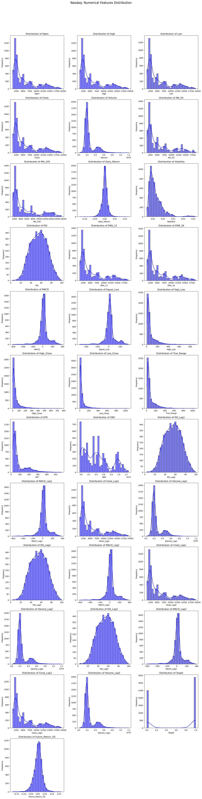

The goal of this section is to perform Exploratory Data Analysis (EDA) on a dataset of financial and economic indicators. It help us understand the distributional properties of the variables. This is an important preparation for subsequent modeling.
Background
The datasets used in this analysis include: - Crude Oil Prices - Dow Jones Index - Gold Prices - Government Spending - Macro Series (GDP, CPI, unemployment, and other indicators)
These datasets were preprocessed into clean CSV files for further exploration. The key objectives are:
Analyzing the distributional characteristics of numerical variables;
Examining correlations between variables;
Exploring the relationship between key features and target variables.
Overview of Methods
Data Preprocessing
Handled missing values using forward-fill and backward-fill methods.
Removed outliers exceeding a 3-standard deviation threshold.
Standardized numerical features using StandardScaler to ensure uniform scaling.
Visualization Techniques
Univariate Analysis:
Using histograms and density plots to analyze the distribution of individual variables (e.g., Open, Close, Volume, RSI, MACD).
Bivariate Analysis:
Using box plots and density plots to compare the distribution of variables among target categories
Correlation Analysis:
Identifying relationships between numerical features using correlation matrices and heat maps.
Code
import pandas as pdimport os# Define file pathsdata_files = {"Crude_Oil": "../../data/processed-data/Crude_Oil_cleaned.csv","Dow_Jones": "../../data/processed-data/Dow_Jones_cleaned.csv","Gold": "../../data/processed-data/Gold_cleaned.csv","Government_Spending": "../../data/processed-data/Government_Spending_Breakdown.csv","Macro_Series": "../../data/processed-data/macro_series_cleaned.csv","Nasdaq": "../../data/processed-data/Nasdaq_cleaned.csv","Personal_Info": "../../data/processed-data/personal_info_cleaned.csv","SP500": "../../data/processed-data/S&P_500_cleaned.csv",}# Check file existencefor name, path in data_files.items():ifnot os.path.exists(path):print(f"File not found: {path}")# Load datasets with error handlingdataframes = {}for name, path in data_files.items():try: dataframes[name] = pd.read_csv(path)print(f"{name} loaded successfully with shape: {dataframes[name].shape}")exceptExceptionas e:print(f"Failed to load {name}: {e}")# Print summary of all tablesfor name, df in dataframes.items():print(f"Table: {name}")print("="*50)print("Basic Info:")print(df.info())print("\nMissing Values:")print(df.isnull().sum())print("\nFirst 5 Rows:")print(df.head())print("="*50)
import matplotlib.pyplot as pltimport seaborn as snsimport mathimport osdef plot_distributions(df, table_name, save_path):# Create the save directory if it doesn't exist os.makedirs(save_path, exist_ok=True) numerical_columns = df.select_dtypes(include=['float64', 'int64']).columns n_cols =3 n_rows = math.ceil(len(numerical_columns) / n_cols) fig, axes = plt.subplots(n_rows, n_cols, figsize=(15, n_rows *5)) fig.suptitle(f"{table_name}: Numerical Features Distribution", fontsize=16)# Handle case where there's only one row (axes would be 1D)if n_rows ==1: axes = axes.reshape(1, -1)for i, col inenumerate(numerical_columns): row, col_pos =divmod(i, n_cols) sns.histplot(df[col], kde=True, bins=30, ax=axes[row, col_pos], color='blue', edgecolor='black') axes[row, col_pos].set_title(f"Distribution of {col}") axes[row, col_pos].set_xlabel(col) axes[row, col_pos].set_ylabel("Frequency")# Remove empty subplotsfor j inrange(i +1, n_rows * n_cols): row, col_pos =divmod(j, n_cols) fig.delaxes(axes[row, col_pos]) plt.tight_layout(rect=[0, 0, 1, 0.95]) plt.show()# Path to save the plotssave_path ="/Users/qqmian/Desktop/GU_5000/Stock_Market_Performance/data/visualized-data"# Generate and save plots for each dataframefor name, df in dataframes.items():print(f"Analyzing {name}") plot_distributions(df, name, save_path)
Analyzing Crude_Oil
Analyzing Dow_Jones
Analyzing Gold
Analyzing Government_Spending
Analyzing Macro_Series
Analyzing Nasdaq

Analyzing Personal_Info
Analyzing SP500
# Define a function to plot and save correlation heatmapdef plot_correlation_heatmap(df, table_name, save_path):# Create save directory if it doesn't exist os.makedirs(save_path, exist_ok=True)# Select numerical columns only numerical_columns = df.select_dtypes(include=['float64', 'int64']).columnsiflen(numerical_columns) ==0:print(f"No numerical columns in {table_name}")return# Compute the correlation matrix corr_matrix = df[numerical_columns].corr()# Create and configure the plot plt.figure(figsize=(16, 12)) heatmap = sns.heatmap(corr_matrix, annot=True, fmt=".2f", cmap="coolwarm", linewidths=0.5, annot_kws={"size": 10}) plt.title(f"Correlation Heatmap for {table_name}", fontsize=16) plt.xticks(rotation=45, fontsize=10, ha='right') # Added ha='right' for better label alignment plt.yticks(rotation=0, fontsize=10)# Adjust layout to prevent label cutoff plt.tight_layout() plt.show()# Define the save pathsave_path ="/Users/qqmian/Desktop/GU_5000/Stock_Market_Performance/data/visualized-data"# Read the CSV files if dataframes is not definedif'dataframes'notinlocals(): dataframes = {} data_path ="/Users/qqmian/Desktop/GU_5000/Stock_Market_Performance/data"forfilein os.listdir(data_path):iffile.endswith('.csv'): name = os.path.splitext(file)[0] file_path = os.path.join(data_path, file) dataframes[name] = pd.read_csv(file_path)print(f"Loaded {file}")# Generate and save heatmaps for each DataFramefor name, df in dataframes.items():print(f"\nAnalyzing correlation for {name}") plot_correlation_heatmap(df, name, save_path)
Analyzing correlation for Crude_Oil
Analyzing correlation for Dow_Jones
Analyzing correlation for Gold
Analyzing correlation for Government_Spending
Analyzing correlation for Macro_Series
Analyzing correlation for Nasdaq
Analyzing correlation for Personal_Info
Analyzing correlation for SP500
import seaborn as snsimport matplotlib.pyplot as pltimport osdef plot_target_distribution(df, save_path):# Create save directory if it doesn't exist os.makedirs(save_path, exist_ok=True)# Create the plot plt.figure(figsize=(10, 6)) sns.countplot(x='Target', data=df, palette='coolwarm') plt.title('Distribution of Target (Price Direction)', fontsize=14) plt.xlabel('Target (0: Down, 1: Up)', fontsize=12) plt.ylabel('Count', fontsize=12)# Add count labels on top of each barfor i in plt.gca().containers: plt.gca().bar_label(i)# Calculate and display percentages total =len(df)for i, count inenumerate(df['Target'].value_counts()): percentage = count/total *100 plt.text(i, count, f'\n{percentage:.1f}%', horizontalalignment='center', fontsize=10) plt.tight_layout()# Save the plot save_file = os.path.join(save_path, 'target_distribution.png') plt.savefig(save_file, dpi=300, bbox_inches='tight') plt.close() plt.show()print(f"Saved target distribution plot to: {save_file}")# Print summary statisticsprint("\nTarget Distribution Summary:")print(df['Target'].value_counts(normalize=True).round(3) *100)# Define save pathsave_path ="/Users/qqmian/Desktop/GU_5000/Stock_Market_Performance/data/visualized-data"# Create and save the plotplot_target_distribution(df, save_path)
/var/folders/1z/n1k_hhl168s2rqld4kqxxr880000gn/T/ipykernel_90861/678134305.py:11: FutureWarning:
Passing `palette` without assigning `hue` is deprecated and will be removed in v0.14.0. Assign the `x` variable to `hue` and set `legend=False` for the same effect.
sns.countplot(x='Target', data=df, palette='coolwarm')
Saved target distribution plot to: /Users/qqmian/Desktop/GU_5000/Stock_Market_Performance/data/visualized-data/target_distribution.png
Target Distribution Summary:
Target
1 57.9
0 42.1
Name: proportion, dtype: float64
import seaborn as snsimport matplotlib.pyplot as pltimport os# create save pathsave_path ="/Users/qqmian/Desktop/GU_5000/Stock_Market_Performance/data/visualized-data"os.makedirs(save_path, exist_ok=True)top_features = ['Future_Return_5D', 'Volatility', 'MACD', 'Signal_Line', 'RSI']# box plotfor feature in top_features: plt.figure(figsize=(8, 5)) sns.boxplot(x='Target', y=feature, data=df, palette='pastel') plt.title(f'Boxplot of {feature} by Target') save_file = os.path.join(save_path, f'{feature}_boxplot.png') plt.savefig(save_file, dpi=300, bbox_inches='tight') plt.show() plt.close()# density plotsfor feature in top_features: plt.figure(figsize=(8, 5)) sns.kdeplot(data=df, x=feature, hue='Target', fill=True, common_norm=False, palette='muted') plt.title(f'Density Plot of {feature} by Target') save_file = os.path.join(save_path, f'{feature}_density.png') plt.savefig(save_file, dpi=300, bbox_inches='tight') plt.show() plt.close()
/var/folders/1z/n1k_hhl168s2rqld4kqxxr880000gn/T/ipykernel_90861/587252943.py:14: FutureWarning:
Passing `palette` without assigning `hue` is deprecated and will be removed in v0.14.0. Assign the `x` variable to `hue` and set `legend=False` for the same effect.
sns.boxplot(x='Target', y=feature, data=df, palette='pastel')
/var/folders/1z/n1k_hhl168s2rqld4kqxxr880000gn/T/ipykernel_90861/587252943.py:14: FutureWarning:
Passing `palette` without assigning `hue` is deprecated and will be removed in v0.14.0. Assign the `x` variable to `hue` and set `legend=False` for the same effect.
sns.boxplot(x='Target', y=feature, data=df, palette='pastel')
/var/folders/1z/n1k_hhl168s2rqld4kqxxr880000gn/T/ipykernel_90861/587252943.py:14: FutureWarning:
Passing `palette` without assigning `hue` is deprecated and will be removed in v0.14.0. Assign the `x` variable to `hue` and set `legend=False` for the same effect.
sns.boxplot(x='Target', y=feature, data=df, palette='pastel')
/var/folders/1z/n1k_hhl168s2rqld4kqxxr880000gn/T/ipykernel_90861/587252943.py:14: FutureWarning:
Passing `palette` without assigning `hue` is deprecated and will be removed in v0.14.0. Assign the `x` variable to `hue` and set `legend=False` for the same effect.
sns.boxplot(x='Target', y=feature, data=df, palette='pastel')
/var/folders/1z/n1k_hhl168s2rqld4kqxxr880000gn/T/ipykernel_90861/587252943.py:14: FutureWarning:
Passing `palette` without assigning `hue` is deprecated and will be removed in v0.14.0. Assign the `x` variable to `hue` and set `legend=False` for the same effect.
sns.boxplot(x='Target', y=feature, data=df, palette='pastel')
from scipy.stats import ttest_indimport pandas as pd# Define the target columntarget_column ='Target'# Replace with the actual target column name in your dataset# Initialize a list to store t-test resultst_test_results = []# Perform t-test for each numerical column in each tablefor name, df in dataframes.items():if target_column notin df.columns:print(f"{name} does not contain {target_column}, skipping...")continue# Select numerical columns numerical_columns = df.select_dtypes(include=['float64', 'int64']).columns# Perform t-test for each numerical columnfor col in numerical_columns: group0 = df[df[target_column] ==0][col] group1 = df[df[target_column] ==1][col]# Perform t-test t_stat, p_value = ttest_ind(group0, group1, equal_var=False)# Append results to the list t_test_results.append({"Table": name,"Feature": col,"t-statistic": t_stat,"p-value": p_value })# Convert results to a DataFramet_test_df = pd.DataFrame(t_test_results)# Filter significant features (p-value < 0.05)significant_features = t_test_df[t_test_df['p-value'] <0.05]# Sort by p-value for better readabilitysignificant_features = significant_features.sort_values(by='p-value')# Display significant featuresprint("Significant Features:")print(significant_features)
/opt/anaconda3/lib/python3.12/site-packages/scipy/stats/_axis_nan_policy.py:531: RuntimeWarning: Precision loss occurred in moment calculation due to catastrophic cancellation. This occurs when the data are nearly identical. Results may be unreliable.
res = hypotest_fun_out(*samples, **kwds)
/opt/anaconda3/lib/python3.12/site-packages/scipy/stats/_axis_nan_policy.py:531: RuntimeWarning: Precision loss occurred in moment calculation due to catastrophic cancellation. This occurs when the data are nearly identical. Results may be unreliable.
res = hypotest_fun_out(*samples, **kwds)
/opt/anaconda3/lib/python3.12/site-packages/scipy/stats/_axis_nan_policy.py:531: RuntimeWarning: Precision loss occurred in moment calculation due to catastrophic cancellation. This occurs when the data are nearly identical. Results may be unreliable.
res = hypotest_fun_out(*samples, **kwds)
/opt/anaconda3/lib/python3.12/site-packages/scipy/stats/_axis_nan_policy.py:531: RuntimeWarning: Precision loss occurred in moment calculation due to catastrophic cancellation. This occurs when the data are nearly identical. Results may be unreliable.
res = hypotest_fun_out(*samples, **kwds)
/opt/anaconda3/lib/python3.12/site-packages/scipy/stats/_axis_nan_policy.py:531: RuntimeWarning: Precision loss occurred in moment calculation due to catastrophic cancellation. This occurs when the data are nearly identical. Results may be unreliable.
res = hypotest_fun_out(*samples, **kwds)
Summary
Summary and Interpretation of Results
Univariate Analysis
By analyzing the histograms and density plots, we find that the distributions of Volume and Volatility show a clear right-skewed trend, which indicates that there are some extreme values or outliers in the data. In addition, the distribution of price characteristics (e.g. Open, High, Low, Close) is closer to normal distribution, showing a balanced and symmetrical characteristic.
Correlation Analysis
There is a strong positive correlation between the price characteristics (Open, High, Low, Close).
MA_50 and MA_200 are highly correlated, as expected.
Bivariate Analysis
Future_Return_5D: Target=1 (price increase) is associated with higher returns compared to Target=0 (price decrease). RSI: Smaller differences between target categories, but Target=1 has a slight aggregation in the 50-60 range. MACD and Signal_Line: both have similar distributions between target categories and do not show significant differences.
Conclusion
This exploratory data analysis revealed critical insights into the dataset:
Univariate Analysis identified the distribution characteristics of all numerical features.
Correlation Analysis highlighted strong relationships among price features and moving averages.
Bivariate Analysis demonstrated differences in key variables (e.g., Future_Return_5D) across the target variable.
These findings provide a solid foundation for further predictive modeling and feature selection.